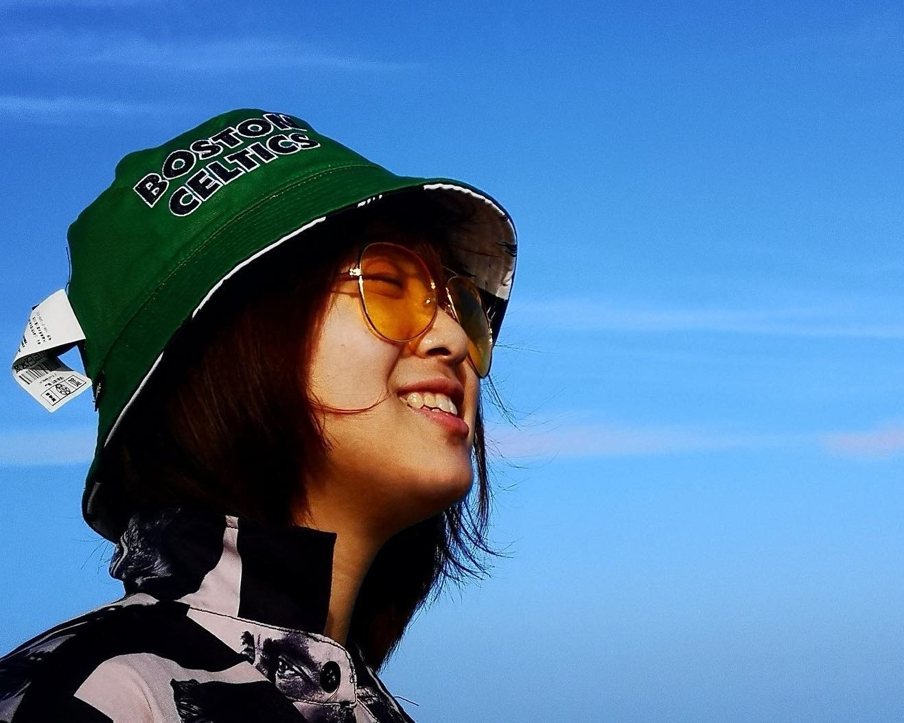

About

I am a new media art learner and currently a undergrad student in IDM program, NYU. I am passionate in film/television/design/other forms of art. I would spend free time to love cat, watch film, and make photograph while travelling. From 2019, I begin a project to make my personal photography book once a year. Interests includes but not limits to kateboard, inkjet paint, drone, hiking, deep diving...